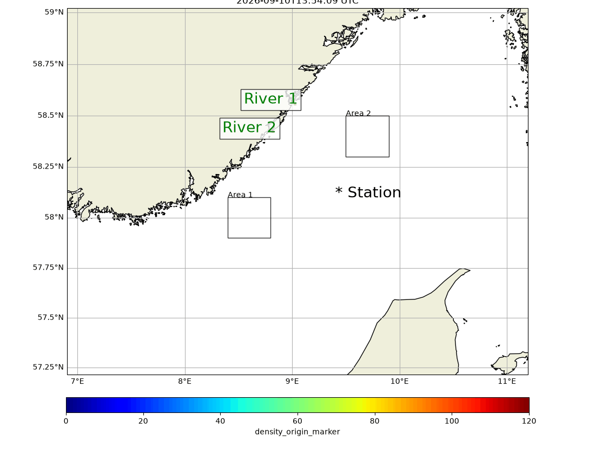
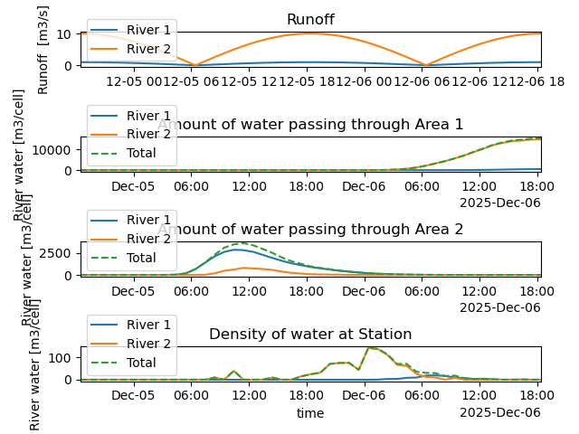
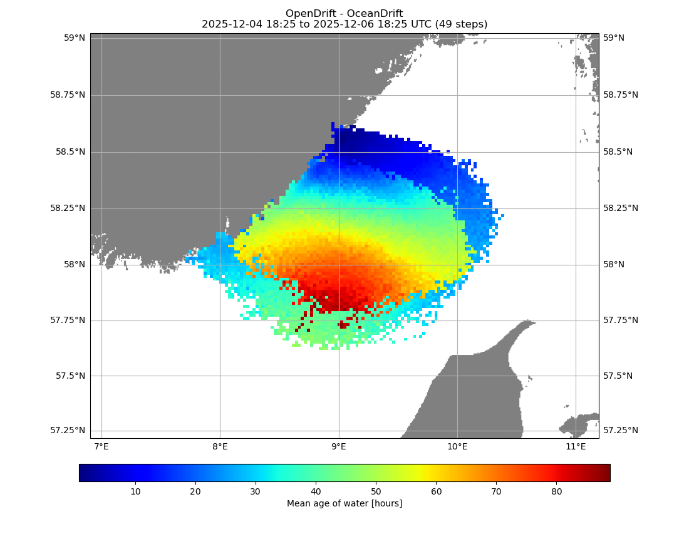

Note
Go to the end to download the full example code.
River runoff
import os
from datetime import datetime, timedelta
import numpy as np
import matplotlib.pyplot as plt
from matplotlib.dates import DateFormatter
import opendrift
from opendrift.models.oceandrift import OceanDrift
from opendrift.readers import reader_oscillating
outfile = 'runoff.nc' # Raw simulation output
histogram_file = 'runoff_histogram.nc'
First make a simulation with two seedings, marked by origin_marker
o = OceanDrift(loglevel=20)
o.set_config('drift:horizontal_diffusivity', 300)
o.set_config('general:coastline_action', 'previous')
o.set_config('general:coastline_approximation_precision', None) # Faster to go back to previous
t1 = datetime.now()
t2 = t1 + timedelta(hours=48)
reader_x = reader_oscillating.Reader('x_sea_water_velocity', period=timedelta(hours=24),
amplitude=1, zero_time=t1)
reader_y = reader_oscillating.Reader('y_sea_water_velocity', period=timedelta(hours=72),
amplitude=.5, zero_time=t2)
o.add_reader([reader_x, reader_y])
number = 25000
o.seed_elements(time=[t1, t2], lon=9.017931, lat=58.562702, number=number,
origin_marker_name='River 1') # River 1
o.seed_elements(time=[t1, t2], lon=8.824815, lat=58.425648, number=number,
origin_marker_name='River 2') # River 2
seed_times = o.elements_scheduled_time[0:number]
o.run(duration=timedelta(hours=48),
time_step=1800, time_step_output=3600, outfile=outfile)
18:25:56 INFO opendrift:576: OpenDriftSimulation initialised (version 1.14.6 / v1.14.6-38-g5a9c4df)
18:25:56 INFO opendrift.models.basemodel.environment:203: Adding a global landmask from GSHHG
18:26:00 INFO opendrift.models.basemodel.environment:227: Fallback values will be used for the following variables which have no readers:
18:26:00 INFO opendrift.models.basemodel.environment:230: sea_surface_height: 0.000000
18:26:00 INFO opendrift.models.basemodel.environment:230: x_wind: 0.000000
18:26:00 INFO opendrift.models.basemodel.environment:230: y_wind: 0.000000
18:26:00 INFO opendrift.models.basemodel.environment:230: upward_sea_water_velocity: 0.000000
18:26:00 INFO opendrift.models.basemodel.environment:230: ocean_vertical_diffusivity: 0.000000
18:26:00 INFO opendrift.models.basemodel.environment:230: sea_surface_wave_significant_height: 0.000000
18:26:00 INFO opendrift.models.basemodel.environment:230: sea_surface_wave_stokes_drift_x_velocity: 0.000000
18:26:00 INFO opendrift.models.basemodel.environment:230: sea_surface_wave_stokes_drift_y_velocity: 0.000000
18:26:00 INFO opendrift.models.basemodel.environment:230: ocean_mixed_layer_thickness: 50.000000
18:26:00 INFO opendrift.models.basemodel.environment:230: sea_floor_depth_below_sea_level: 10000.000000
18:26:00 INFO opendrift:1803: Skipping environment variable ocean_vertical_diffusivity because of condition ['drift:vertical_mixing', 'is', False]
18:26:00 INFO opendrift:1803: Skipping environment variable ocean_mixed_layer_thickness because of condition ['drift:vertical_mixing', 'is', False]
18:26:00 INFO opendrift:1814: Storing previous values of element property lon because of condition (('general:coastline_action', 'in', ['stranding', 'previous']), 'or', ('general:seafloor_action', 'in', ['previous']))
18:26:00 INFO opendrift:1814: Storing previous values of element property lat because of condition (('general:coastline_action', 'in', ['stranding', 'previous']), 'or', ('general:seafloor_action', 'in', ['previous']))
18:26:00 INFO opendrift:1822: Storing previous values of environment variable sea_surface_height because of condition ['drift:vertical_advection', 'is', True]
18:26:02 INFO opendrift:952: Using existing reader for land_binary_mask to move elements to ocean
18:26:02 INFO opendrift:982: All points are in ocean
18:26:02 INFO opendrift:2111: 2025-12-04 18:25:56.635901 - step 1 of 96 - 522 active elements (0 deactivated)
18:26:02 INFO opendrift:2111: 2025-12-04 18:55:56.635901 - step 2 of 96 - 1042 active elements (0 deactivated)
18:26:03 INFO opendrift:2111: 2025-12-04 19:25:56.635901 - step 3 of 96 - 1564 active elements (0 deactivated)
18:26:03 INFO opendrift:2111: 2025-12-04 19:55:56.635901 - step 4 of 96 - 2084 active elements (0 deactivated)
18:26:03 INFO opendrift:2111: 2025-12-04 20:25:56.635901 - step 5 of 96 - 2606 active elements (0 deactivated)
18:26:03 INFO opendrift:2111: 2025-12-04 20:55:56.635901 - step 6 of 96 - 3126 active elements (0 deactivated)
18:26:03 INFO opendrift:2111: 2025-12-04 21:25:56.635901 - step 7 of 96 - 3646 active elements (0 deactivated)
18:26:04 INFO opendrift:2111: 2025-12-04 21:55:56.635901 - step 8 of 96 - 4168 active elements (0 deactivated)
18:26:04 INFO opendrift:2111: 2025-12-04 22:25:56.635901 - step 9 of 96 - 4688 active elements (0 deactivated)
18:26:04 INFO opendrift:2111: 2025-12-04 22:55:56.635901 - step 10 of 96 - 5210 active elements (0 deactivated)
18:26:04 INFO opendrift:2111: 2025-12-04 23:25:56.635901 - step 11 of 96 - 5730 active elements (0 deactivated)
18:26:04 INFO opendrift:2111: 2025-12-04 23:55:56.635901 - step 12 of 96 - 6250 active elements (0 deactivated)
18:26:04 INFO opendrift:2111: 2025-12-05 00:25:56.635901 - step 13 of 96 - 6772 active elements (0 deactivated)
18:26:04 INFO opendrift:2111: 2025-12-05 00:55:56.635901 - step 14 of 96 - 7292 active elements (0 deactivated)
18:26:04 INFO opendrift:2111: 2025-12-05 01:25:56.635901 - step 15 of 96 - 7814 active elements (0 deactivated)
18:26:04 INFO opendrift:2111: 2025-12-05 01:55:56.635901 - step 16 of 96 - 8334 active elements (0 deactivated)
18:26:04 INFO opendrift:2111: 2025-12-05 02:25:56.635901 - step 17 of 96 - 8854 active elements (0 deactivated)
18:26:04 INFO opendrift:2111: 2025-12-05 02:55:56.635901 - step 18 of 96 - 9376 active elements (0 deactivated)
18:26:04 INFO opendrift:2111: 2025-12-05 03:25:56.635901 - step 19 of 96 - 9896 active elements (0 deactivated)
18:26:04 INFO opendrift:2111: 2025-12-05 03:55:56.635901 - step 20 of 96 - 10418 active elements (0 deactivated)
18:26:04 INFO opendrift:2111: 2025-12-05 04:25:56.635901 - step 21 of 96 - 10938 active elements (0 deactivated)
18:26:04 INFO opendrift:2111: 2025-12-05 04:55:56.635901 - step 22 of 96 - 11458 active elements (0 deactivated)
18:26:04 INFO opendrift:2111: 2025-12-05 05:25:56.635901 - step 23 of 96 - 11980 active elements (0 deactivated)
18:26:04 INFO opendrift:2111: 2025-12-05 05:55:56.635901 - step 24 of 96 - 12500 active elements (0 deactivated)
18:26:04 INFO opendrift:2111: 2025-12-05 06:25:56.635901 - step 25 of 96 - 13022 active elements (0 deactivated)
18:26:05 INFO opendrift:2111: 2025-12-05 06:55:56.635901 - step 26 of 96 - 13542 active elements (0 deactivated)
18:26:05 INFO opendrift:2111: 2025-12-05 07:25:56.635901 - step 27 of 96 - 14062 active elements (0 deactivated)
18:26:05 INFO opendrift:2111: 2025-12-05 07:55:56.635901 - step 28 of 96 - 14584 active elements (0 deactivated)
18:26:05 INFO opendrift:2111: 2025-12-05 08:25:56.635901 - step 29 of 96 - 15104 active elements (0 deactivated)
18:26:05 INFO opendrift:2111: 2025-12-05 08:55:56.635901 - step 30 of 96 - 15626 active elements (0 deactivated)
18:26:05 INFO opendrift:2111: 2025-12-05 09:25:56.635901 - step 31 of 96 - 16146 active elements (0 deactivated)
18:26:05 INFO opendrift:2111: 2025-12-05 09:55:56.635901 - step 32 of 96 - 16668 active elements (0 deactivated)
18:26:05 INFO opendrift:2111: 2025-12-05 10:25:56.635901 - step 33 of 96 - 17188 active elements (0 deactivated)
18:26:05 INFO opendrift:2111: 2025-12-05 10:55:56.635901 - step 34 of 96 - 17708 active elements (0 deactivated)
18:26:05 INFO opendrift:2111: 2025-12-05 11:25:56.635901 - step 35 of 96 - 18230 active elements (0 deactivated)
18:26:05 INFO opendrift:2111: 2025-12-05 11:55:56.635901 - step 36 of 96 - 18750 active elements (0 deactivated)
18:26:05 INFO opendrift:2111: 2025-12-05 12:25:56.635901 - step 37 of 96 - 19272 active elements (0 deactivated)
18:26:05 INFO opendrift:2111: 2025-12-05 12:55:56.635901 - step 38 of 96 - 19792 active elements (0 deactivated)
18:26:06 INFO opendrift:2111: 2025-12-05 13:25:56.635901 - step 39 of 96 - 20312 active elements (0 deactivated)
18:26:06 INFO opendrift:2111: 2025-12-05 13:55:56.635901 - step 40 of 96 - 20834 active elements (0 deactivated)
18:26:06 INFO opendrift:2111: 2025-12-05 14:25:56.635901 - step 41 of 96 - 21354 active elements (0 deactivated)
18:26:06 INFO opendrift:2111: 2025-12-05 14:55:56.635901 - step 42 of 96 - 21876 active elements (0 deactivated)
18:26:06 INFO opendrift:2111: 2025-12-05 15:25:56.635901 - step 43 of 96 - 22396 active elements (0 deactivated)
18:26:06 INFO opendrift:2111: 2025-12-05 15:55:56.635901 - step 44 of 96 - 22916 active elements (0 deactivated)
18:26:06 INFO opendrift:2111: 2025-12-05 16:25:56.635901 - step 45 of 96 - 23438 active elements (0 deactivated)
18:26:06 INFO opendrift:2111: 2025-12-05 16:55:56.635901 - step 46 of 96 - 23958 active elements (0 deactivated)
18:26:06 INFO opendrift:2111: 2025-12-05 17:25:56.635901 - step 47 of 96 - 24480 active elements (0 deactivated)
18:26:07 INFO opendrift:2111: 2025-12-05 17:55:56.635901 - step 48 of 96 - 25000 active elements (0 deactivated)
18:26:07 INFO opendrift:2111: 2025-12-05 18:25:56.635901 - step 49 of 96 - 25520 active elements (0 deactivated)
18:26:07 INFO opendrift:2111: 2025-12-05 18:55:56.635901 - step 50 of 96 - 26042 active elements (0 deactivated)
18:26:07 INFO opendrift:2111: 2025-12-05 19:25:56.635901 - step 51 of 96 - 26562 active elements (0 deactivated)
18:26:07 INFO opendrift:2111: 2025-12-05 19:55:56.635901 - step 52 of 96 - 27084 active elements (0 deactivated)
18:26:07 INFO opendrift:2111: 2025-12-05 20:25:56.635901 - step 53 of 96 - 27604 active elements (0 deactivated)
18:26:08 INFO opendrift:2111: 2025-12-05 20:55:56.635901 - step 54 of 96 - 28124 active elements (0 deactivated)
18:26:08 INFO opendrift:2111: 2025-12-05 21:25:56.635901 - step 55 of 96 - 28646 active elements (0 deactivated)
18:26:08 INFO opendrift:2111: 2025-12-05 21:55:56.635901 - step 56 of 96 - 29166 active elements (0 deactivated)
18:26:08 INFO opendrift:2111: 2025-12-05 22:25:56.635901 - step 57 of 96 - 29688 active elements (0 deactivated)
18:26:08 INFO opendrift:2111: 2025-12-05 22:55:56.635901 - step 58 of 96 - 30208 active elements (0 deactivated)
18:26:08 INFO opendrift:2111: 2025-12-05 23:25:56.635901 - step 59 of 96 - 30728 active elements (0 deactivated)
18:26:09 INFO opendrift:2111: 2025-12-05 23:55:56.635901 - step 60 of 96 - 31250 active elements (0 deactivated)
18:26:09 INFO opendrift:2111: 2025-12-06 00:25:56.635901 - step 61 of 96 - 31770 active elements (0 deactivated)
18:26:09 INFO opendrift:2111: 2025-12-06 00:55:56.635901 - step 62 of 96 - 32292 active elements (0 deactivated)
18:26:09 INFO opendrift:2111: 2025-12-06 01:25:56.635901 - step 63 of 96 - 32812 active elements (0 deactivated)
18:26:09 INFO opendrift:2111: 2025-12-06 01:55:56.635901 - step 64 of 96 - 33334 active elements (0 deactivated)
18:26:09 INFO opendrift:2111: 2025-12-06 02:25:56.635901 - step 65 of 96 - 33854 active elements (0 deactivated)
18:26:10 INFO opendrift:2111: 2025-12-06 02:55:56.635901 - step 66 of 96 - 34374 active elements (0 deactivated)
18:26:10 INFO opendrift:2111: 2025-12-06 03:25:56.635901 - step 67 of 96 - 34896 active elements (0 deactivated)
18:26:10 INFO opendrift:2111: 2025-12-06 03:55:56.635901 - step 68 of 96 - 35416 active elements (0 deactivated)
18:26:10 INFO opendrift:2111: 2025-12-06 04:25:56.635901 - step 69 of 96 - 35938 active elements (0 deactivated)
18:26:11 INFO opendrift:2111: 2025-12-06 04:55:56.635901 - step 70 of 96 - 36458 active elements (0 deactivated)
18:26:11 INFO opendrift:2111: 2025-12-06 05:25:56.635901 - step 71 of 96 - 36978 active elements (0 deactivated)
18:26:11 INFO opendrift:2111: 2025-12-06 05:55:56.635901 - step 72 of 96 - 37500 active elements (0 deactivated)
18:26:11 INFO opendrift:2111: 2025-12-06 06:25:56.635901 - step 73 of 96 - 38020 active elements (0 deactivated)
18:26:12 INFO opendrift:2111: 2025-12-06 06:55:56.635901 - step 74 of 96 - 38542 active elements (0 deactivated)
18:26:12 INFO opendrift:2111: 2025-12-06 07:25:56.635901 - step 75 of 96 - 39062 active elements (0 deactivated)
18:26:12 INFO opendrift:2111: 2025-12-06 07:55:56.635901 - step 76 of 96 - 39582 active elements (0 deactivated)
18:26:12 INFO opendrift:2111: 2025-12-06 08:25:56.635901 - step 77 of 96 - 40104 active elements (0 deactivated)
18:26:13 INFO opendrift:2111: 2025-12-06 08:55:56.635901 - step 78 of 96 - 40624 active elements (0 deactivated)
18:26:13 INFO opendrift:2111: 2025-12-06 09:25:56.635901 - step 79 of 96 - 41146 active elements (0 deactivated)
18:26:13 INFO opendrift:2111: 2025-12-06 09:55:56.635901 - step 80 of 96 - 41666 active elements (0 deactivated)
18:26:14 INFO opendrift:2111: 2025-12-06 10:25:56.635901 - step 81 of 96 - 42186 active elements (0 deactivated)
18:26:14 INFO opendrift:2111: 2025-12-06 10:55:56.635901 - step 82 of 96 - 42708 active elements (0 deactivated)
18:26:14 INFO opendrift:2111: 2025-12-06 11:25:56.635901 - step 83 of 96 - 43228 active elements (0 deactivated)
18:26:15 INFO opendrift:2111: 2025-12-06 11:55:56.635901 - step 84 of 96 - 43750 active elements (0 deactivated)
18:26:15 INFO opendrift:2111: 2025-12-06 12:25:56.635901 - step 85 of 96 - 44270 active elements (0 deactivated)
18:26:15 INFO opendrift:2111: 2025-12-06 12:55:56.635901 - step 86 of 96 - 44790 active elements (0 deactivated)
18:26:16 INFO opendrift:2111: 2025-12-06 13:25:56.635901 - step 87 of 96 - 45312 active elements (0 deactivated)
18:26:16 INFO opendrift:2111: 2025-12-06 13:55:56.635901 - step 88 of 96 - 45832 active elements (0 deactivated)
18:26:16 INFO opendrift:2111: 2025-12-06 14:25:56.635901 - step 89 of 96 - 46354 active elements (0 deactivated)
18:26:17 INFO opendrift:2111: 2025-12-06 14:55:56.635901 - step 90 of 96 - 46874 active elements (0 deactivated)
18:26:17 INFO opendrift:2111: 2025-12-06 15:25:56.635901 - step 91 of 96 - 47394 active elements (0 deactivated)
18:26:17 INFO opendrift:2111: 2025-12-06 15:55:56.635901 - step 92 of 96 - 47916 active elements (0 deactivated)
18:26:17 INFO opendrift:2111: 2025-12-06 16:25:56.635901 - step 93 of 96 - 48436 active elements (0 deactivated)
18:26:18 INFO opendrift:2111: 2025-12-06 16:55:56.635901 - step 94 of 96 - 48958 active elements (0 deactivated)
18:26:18 INFO opendrift:2111: 2025-12-06 17:25:56.635901 - step 95 of 96 - 49478 active elements (0 deactivated)
18:26:18 INFO opendrift:2111: 2025-12-06 17:55:56.635901 - step 96 of 96 - 50000 active elements (0 deactivated)
Opening the output file lazily with Xarray. This will work even if the file is too large to fit in memory, as it will read and process data chuck-by-chunk directly from file using Dask.
o = opendrift.open(outfile)
18:26:26 DEBUG opendrift.config:168: Adding 18 config items from __init__
18:26:26 DEBUG opendrift.config:178: Overwriting config item readers:max_number_of_fails
18:26:26 DEBUG opendrift.config:168: Adding 5 config items from __init__
18:26:26 INFO opendrift:576: OpenDriftSimulation initialised (version 1.14.6 / v1.14.6-38-g5a9c4df)
18:26:26 DEBUG opendrift.config:168: Adding 19 config items from oceandrift
18:26:26 DEBUG opendrift.config:178: Overwriting config item seed:z
18:26:26 DEBUG opendrift.export.io_netcdf:106: Importing from runoff.nc
18:26:27 DEBUG opendrift:1707: No elements to deactivate
18:26:27 DEBUG opendrift.export.io_netcdf:151: Setting imported config: environment:constant:x_sea_water_velocity -> None
18:26:27 DEBUG opendrift.export.io_netcdf:151: Setting imported config: environment:fallback:x_sea_water_velocity -> 0
18:26:27 DEBUG opendrift.export.io_netcdf:151: Setting imported config: environment:constant:y_sea_water_velocity -> None
18:26:27 DEBUG opendrift.export.io_netcdf:151: Setting imported config: environment:fallback:y_sea_water_velocity -> 0
18:26:27 DEBUG opendrift.export.io_netcdf:151: Setting imported config: environment:constant:sea_surface_height -> None
18:26:27 DEBUG opendrift.export.io_netcdf:151: Setting imported config: environment:fallback:sea_surface_height -> 0
18:26:27 DEBUG opendrift.export.io_netcdf:151: Setting imported config: environment:constant:x_wind -> None
18:26:27 DEBUG opendrift.export.io_netcdf:151: Setting imported config: environment:fallback:x_wind -> 0
18:26:27 DEBUG opendrift.export.io_netcdf:151: Setting imported config: environment:constant:y_wind -> None
18:26:27 DEBUG opendrift.export.io_netcdf:151: Setting imported config: environment:fallback:y_wind -> 0
18:26:27 DEBUG opendrift.export.io_netcdf:151: Setting imported config: environment:constant:upward_sea_water_velocity -> None
18:26:27 DEBUG opendrift.export.io_netcdf:151: Setting imported config: environment:fallback:upward_sea_water_velocity -> 0
18:26:27 DEBUG opendrift.export.io_netcdf:151: Setting imported config: environment:constant:ocean_vertical_diffusivity -> None
18:26:27 DEBUG opendrift.export.io_netcdf:151: Setting imported config: environment:fallback:ocean_vertical_diffusivity -> 0
18:26:27 DEBUG opendrift.export.io_netcdf:151: Setting imported config: environment:constant:sea_surface_wave_significant_height -> None
18:26:27 DEBUG opendrift.export.io_netcdf:151: Setting imported config: environment:fallback:sea_surface_wave_significant_height -> 0
18:26:27 DEBUG opendrift.export.io_netcdf:151: Setting imported config: environment:constant:sea_surface_wave_stokes_drift_x_velocity -> None
18:26:27 DEBUG opendrift.export.io_netcdf:151: Setting imported config: environment:fallback:sea_surface_wave_stokes_drift_x_velocity -> 0
18:26:27 DEBUG opendrift.export.io_netcdf:151: Setting imported config: environment:constant:sea_surface_wave_stokes_drift_y_velocity -> None
18:26:27 DEBUG opendrift.export.io_netcdf:151: Setting imported config: environment:fallback:sea_surface_wave_stokes_drift_y_velocity -> 0
18:26:27 DEBUG opendrift.export.io_netcdf:151: Setting imported config: environment:constant:ocean_mixed_layer_thickness -> None
18:26:27 DEBUG opendrift.export.io_netcdf:151: Setting imported config: environment:fallback:ocean_mixed_layer_thickness -> 50
18:26:27 DEBUG opendrift.export.io_netcdf:151: Setting imported config: environment:constant:sea_floor_depth_below_sea_level -> None
18:26:27 DEBUG opendrift.export.io_netcdf:151: Setting imported config: environment:fallback:sea_floor_depth_below_sea_level -> 10000
18:26:27 DEBUG opendrift.export.io_netcdf:151: Setting imported config: environment:constant:land_binary_mask -> None
18:26:27 DEBUG opendrift.export.io_netcdf:151: Setting imported config: environment:fallback:land_binary_mask -> None
18:26:27 DEBUG opendrift.export.io_netcdf:151: Setting imported config: general:use_auto_landmask -> True
18:26:27 DEBUG opendrift.export.io_netcdf:151: Setting imported config: drift:current_uncertainty -> 0
18:26:27 DEBUG opendrift.export.io_netcdf:151: Setting imported config: drift:current_uncertainty_uniform -> 0
18:26:27 DEBUG opendrift.export.io_netcdf:151: Setting imported config: drift:max_speed -> 2.0
18:26:27 DEBUG opendrift.export.io_netcdf:151: Setting imported config: readers:max_number_of_fails -> 1
18:26:27 DEBUG opendrift.export.io_netcdf:151: Setting imported config: general:simulation_name ->
18:26:27 DEBUG opendrift.export.io_netcdf:151: Setting imported config: general:coastline_action -> previous
18:26:27 DEBUG opendrift.export.io_netcdf:151: Setting imported config: general:coastline_approximation_precision -> None
18:26:27 DEBUG opendrift.export.io_netcdf:151: Setting imported config: general:time_step_minutes -> 60
18:26:27 DEBUG opendrift.export.io_netcdf:151: Setting imported config: general:time_step_output_minutes -> None
18:26:27 DEBUG opendrift.export.io_netcdf:151: Setting imported config: seed:ocean_only -> True
18:26:27 DEBUG opendrift.export.io_netcdf:151: Setting imported config: seed:number -> 1
18:26:27 DEBUG opendrift.export.io_netcdf:151: Setting imported config: drift:max_age_seconds -> None
18:26:27 DEBUG opendrift.export.io_netcdf:151: Setting imported config: drift:advection_scheme -> euler
18:26:27 DEBUG opendrift.export.io_netcdf:151: Setting imported config: drift:horizontal_diffusivity -> 300.0
18:26:27 DEBUG opendrift.export.io_netcdf:151: Setting imported config: drift:profiles_depth -> 50
18:26:27 DEBUG opendrift.export.io_netcdf:151: Setting imported config: drift:wind_uncertainty -> 0
18:26:27 DEBUG opendrift.export.io_netcdf:151: Setting imported config: drift:relative_wind -> False
18:26:27 DEBUG opendrift.export.io_netcdf:151: Setting imported config: drift:deactivate_north_of -> None
18:26:27 DEBUG opendrift.export.io_netcdf:151: Setting imported config: drift:deactivate_south_of -> None
18:26:27 DEBUG opendrift.export.io_netcdf:151: Setting imported config: drift:deactivate_east_of -> None
18:26:27 DEBUG opendrift.export.io_netcdf:151: Setting imported config: drift:deactivate_west_of -> None
18:26:27 DEBUG opendrift.export.io_netcdf:151: Setting imported config: seed:origin_marker -> 0
18:26:27 DEBUG opendrift.export.io_netcdf:151: Setting imported config: seed:z -> 0
18:26:27 DEBUG opendrift.export.io_netcdf:151: Setting imported config: seed:wind_drift_factor -> 0.02
18:26:27 DEBUG opendrift.export.io_netcdf:151: Setting imported config: seed:current_drift_factor -> 1
18:26:27 DEBUG opendrift.export.io_netcdf:151: Setting imported config: seed:terminal_velocity -> 0.0
18:26:27 DEBUG opendrift.export.io_netcdf:151: Setting imported config: drift:vertical_advection -> True
18:26:27 DEBUG opendrift.export.io_netcdf:151: Setting imported config: drift:vertical_advection_at_surface -> False
18:26:27 DEBUG opendrift.export.io_netcdf:151: Setting imported config: drift:water_column_stretching -> False
18:26:27 DEBUG opendrift.export.io_netcdf:151: Setting imported config: drift:vertical_advection_correction -> False
18:26:27 DEBUG opendrift.export.io_netcdf:151: Setting imported config: drift:vertical_mixing -> False
18:26:27 DEBUG opendrift.export.io_netcdf:151: Setting imported config: drift:vertical_mixing_at_surface -> False
18:26:27 DEBUG opendrift.export.io_netcdf:151: Setting imported config: vertical_mixing:timestep -> 60
18:26:27 DEBUG opendrift.export.io_netcdf:151: Setting imported config: vertical_mixing:diffusivitymodel -> environment
18:26:27 DEBUG opendrift.export.io_netcdf:151: Setting imported config: vertical_mixing:background_diffusivity -> 1.2e-05
18:26:27 DEBUG opendrift.export.io_netcdf:151: Setting imported config: vertical_mixing:TSprofiles -> False
18:26:27 DEBUG opendrift.export.io_netcdf:151: Setting imported config: drift:wind_drift_depth -> 0.1
18:26:27 DEBUG opendrift.export.io_netcdf:151: Setting imported config: drift:stokes_drift -> True
18:26:27 DEBUG opendrift.export.io_netcdf:151: Setting imported config: drift:stokes_drift_profile -> Phillips
18:26:27 DEBUG opendrift.export.io_netcdf:151: Setting imported config: drift:use_tabularised_stokes_drift -> False
18:26:27 DEBUG opendrift.export.io_netcdf:151: Setting imported config: drift:tabularised_stokes_drift_fetch -> 25000
18:26:27 DEBUG opendrift.export.io_netcdf:151: Setting imported config: general:seafloor_action -> lift_to_seafloor
18:26:27 DEBUG opendrift.export.io_netcdf:151: Setting imported config: drift:truncate_ocean_model_below_m -> None
18:26:27 DEBUG opendrift.export.io_netcdf:151: Setting imported config: seed:seafloor -> False
18:26:27 INFO opendrift:82: Returning <class 'opendrift.models.oceandrift.OceanDrift'> object
We want to extract timeseries of river water at the coordinates of a hypothetical measuring station as well as the amount of river water passing through two defined areas/regions
station_lon = 9.4
station_lat = 58.1
box1_lon = [8.4, 8.8]
box1_lat = [57.9, 58.1]
box2_lon = [9.5, 9.9]
box2_lat = [58.3, 58.5]
Animation of the spatial density of river runoff water. Although there are the same number of elements from each river, the density plots are weighted with the actual runoff at time of seeding. This weighting can be done/changed afterwards without needing to redo the simulation. The calculated density fields will be stored/cached in the analysis file for later re-use, as their calculation may be time consuming for huge output files. Note that other analysis/plotting methods are not yet adapted to datasets opened lazily with open_xarray
runoff_river1 = np.abs(np.cos(np.arange(number)*2*np.pi/(number))) # Impose a temporal variation of runoff
runoff_river2 = 10*runoff_river1 # Let river 2 have 10 times as large runoff as river 1
runoff = np.concatenate((runoff_river1, runoff_river2))
Calculate density with given pixel size, weighted by runoff amount per element
river_water = o.get_histogram(pixelsize_m=1500, weights=runoff, density=False)
rw = river_water.sum(dim='origin_marker') # For both rivers
#rw = river_water.isel(origin_marker=1) # For one of the rivers
river_water.name = 'River water [m3/cell]'
text = [{'s': o.origin_marker[0], 'x': 8.55, 'y': 58.56, 'fontsize': 20, 'color': 'g',
'backgroundcolor': 'white', 'bbox': dict(facecolor='white', alpha=0.8), 'zorder': 1000},
{'s': o.origin_marker[1], 'x': 8.35, 'y': 58.42, 'fontsize': 20, 'color': 'g',
'backgroundcolor': 'white', 'bbox': dict(facecolor='white', alpha=0.8), 'zorder': 1000},
{'s': '* Station', 'x': station_lon, 'y': station_lat, 'fontsize': 20, 'color': 'k',
'backgroundcolor': 'white', 'bbox': dict(facecolor='none', edgecolor='none', alpha=0.4), 'zorder': 1000}]
box = [{'lon': box1_lon, 'lat': box1_lat, 'text': 'Area 1', 'fc': 'none', 'alpha': 0.8, 'lw': 1, 'ec': 'k'},
{'lon': box2_lon, 'lat': box2_lat, 'text': 'Area 2', 'fc': 'none', 'alpha': 0.8, 'lw': 1, 'ec': 'k'}]
o.animation(background=rw.where(rw>0), bgalpha=1, fast=False,
show_elements=False, vmin=0, vmax=120, text=text, box=box)
18:26:27 INFO opendrift:3936: calculating for origin_marker 0...
18:26:27 INFO opendrift:3936: calculating for origin_marker 1...
18:26:27 DEBUG opendrift:2439: Setting up map: corners=None, fast=False, lscale=None
18:26:27 DEBUG opendrift.readers.reader_global_landmask:84: Loading shapes ('h' level 1) with Cartopy shapereader...
18:26:38 DEBUG opendrift.readers.reader_global_landmask:84: Loading shapes ('h' level 5) with Cartopy shapereader...
18:26:38 DEBUG opendrift.readers.reader_global_landmask:84: Loading shapes ('h' level 6) with Cartopy shapereader...
18:26:38 DEBUG opendrift.readers.reader_global_landmask:123: Adding GSHHG shapes from cartopy, scale: h, extent: (6.905538558959962, 11.193532943725584, 57.216049194335945, 59.021724700927734)..
18:26:38 DEBUG opendrift.readers.reader_global_landmask:123: Adding GSHHG shapes from cartopy, scale: h, extent: (6.905538558959962, 11.193532943725584, 57.216049194335945, 59.021724700927734)..
18:26:38 DEBUG opendrift:3098: Saving animation..
18:26:39 INFO opendrift:4656: Saving animation to /root/project/docs/source/gallery/animations/example_river_runoff_0.gif...
18:26:39 DEBUG opendrift.readers.reader_global_landmask:123: Adding GSHHG shapes from cartopy, scale: h, extent: (6.905538558959962, 11.193532943725584, 57.216049194335945, 59.021724700927734)..
18:26:39 DEBUG opendrift.readers.reader_global_landmask:123: Adding GSHHG shapes from cartopy, scale: h, extent: (6.905538558959962, 11.193532943725584, 57.216049194335945, 59.021724700927734)..
18:26:40 DEBUG opendrift.readers.reader_global_landmask:123: Adding GSHHG shapes from cartopy, scale: h, extent: (6.905538558959962, 11.193532943725584, 57.216049194335945, 59.021724700927734)..
18:26:40 DEBUG opendrift.readers.reader_global_landmask:123: Adding GSHHG shapes from cartopy, scale: h, extent: (6.905538558959962, 11.193532943725584, 57.216049194335945, 59.021724700927734)..
18:26:40 DEBUG opendrift.readers.reader_global_landmask:123: Adding GSHHG shapes from cartopy, scale: h, extent: (6.905538558959962, 11.193532943725584, 57.216049194335945, 59.021724700927734)..
18:26:40 DEBUG opendrift.readers.reader_global_landmask:123: Adding GSHHG shapes from cartopy, scale: h, extent: (6.905538558959962, 11.193532943725584, 57.216049194335945, 59.021724700927734)..
18:26:41 DEBUG opendrift.readers.reader_global_landmask:123: Adding GSHHG shapes from cartopy, scale: h, extent: (6.905538558959962, 11.193532943725584, 57.216049194335945, 59.021724700927734)..
18:26:41 DEBUG opendrift.readers.reader_global_landmask:123: Adding GSHHG shapes from cartopy, scale: h, extent: (6.905538558959962, 11.193532943725584, 57.216049194335945, 59.021724700927734)..
18:26:41 DEBUG opendrift.readers.reader_global_landmask:123: Adding GSHHG shapes from cartopy, scale: h, extent: (6.905538558959962, 11.193532943725584, 57.216049194335945, 59.021724700927734)..
18:26:42 DEBUG opendrift.readers.reader_global_landmask:123: Adding GSHHG shapes from cartopy, scale: h, extent: (6.905538558959962, 11.193532943725584, 57.216049194335945, 59.021724700927734)..
18:26:42 DEBUG opendrift.readers.reader_global_landmask:123: Adding GSHHG shapes from cartopy, scale: h, extent: (6.905538558959962, 11.193532943725584, 57.216049194335945, 59.021724700927734)..
18:26:42 DEBUG opendrift.readers.reader_global_landmask:123: Adding GSHHG shapes from cartopy, scale: h, extent: (6.905538558959962, 11.193532943725584, 57.216049194335945, 59.021724700927734)..
18:26:43 DEBUG opendrift.readers.reader_global_landmask:123: Adding GSHHG shapes from cartopy, scale: h, extent: (6.905538558959962, 11.193532943725584, 57.216049194335945, 59.021724700927734)..
18:26:43 DEBUG opendrift.readers.reader_global_landmask:123: Adding GSHHG shapes from cartopy, scale: h, extent: (6.905538558959962, 11.193532943725584, 57.216049194335945, 59.021724700927734)..
18:26:43 DEBUG opendrift.readers.reader_global_landmask:123: Adding GSHHG shapes from cartopy, scale: h, extent: (6.905538558959962, 11.193532943725584, 57.216049194335945, 59.021724700927734)..
18:26:44 DEBUG opendrift.readers.reader_global_landmask:123: Adding GSHHG shapes from cartopy, scale: h, extent: (6.905538558959962, 11.193532943725584, 57.216049194335945, 59.021724700927734)..
18:26:44 DEBUG opendrift.readers.reader_global_landmask:123: Adding GSHHG shapes from cartopy, scale: h, extent: (6.905538558959962, 11.193532943725584, 57.216049194335945, 59.021724700927734)..
18:26:44 DEBUG opendrift.readers.reader_global_landmask:123: Adding GSHHG shapes from cartopy, scale: h, extent: (6.905538558959962, 11.193532943725584, 57.216049194335945, 59.021724700927734)..
18:26:45 DEBUG opendrift.readers.reader_global_landmask:123: Adding GSHHG shapes from cartopy, scale: h, extent: (6.905538558959962, 11.193532943725584, 57.216049194335945, 59.021724700927734)..
18:26:45 DEBUG opendrift.readers.reader_global_landmask:123: Adding GSHHG shapes from cartopy, scale: h, extent: (6.905538558959962, 11.193532943725584, 57.216049194335945, 59.021724700927734)..
18:26:45 DEBUG opendrift.readers.reader_global_landmask:123: Adding GSHHG shapes from cartopy, scale: h, extent: (6.905538558959962, 11.193532943725584, 57.216049194335945, 59.021724700927734)..
18:26:45 DEBUG opendrift.readers.reader_global_landmask:123: Adding GSHHG shapes from cartopy, scale: h, extent: (6.905538558959962, 11.193532943725584, 57.216049194335945, 59.021724700927734)..
18:26:46 DEBUG opendrift.readers.reader_global_landmask:123: Adding GSHHG shapes from cartopy, scale: h, extent: (6.905538558959962, 11.193532943725584, 57.216049194335945, 59.021724700927734)..
18:26:46 DEBUG opendrift.readers.reader_global_landmask:123: Adding GSHHG shapes from cartopy, scale: h, extent: (6.905538558959962, 11.193532943725584, 57.216049194335945, 59.021724700927734)..
18:26:46 DEBUG opendrift.readers.reader_global_landmask:123: Adding GSHHG shapes from cartopy, scale: h, extent: (6.905538558959962, 11.193532943725584, 57.216049194335945, 59.021724700927734)..
18:26:47 DEBUG opendrift.readers.reader_global_landmask:123: Adding GSHHG shapes from cartopy, scale: h, extent: (6.905538558959962, 11.193532943725584, 57.216049194335945, 59.021724700927734)..
18:26:47 DEBUG opendrift.readers.reader_global_landmask:123: Adding GSHHG shapes from cartopy, scale: h, extent: (6.905538558959962, 11.193532943725584, 57.216049194335945, 59.021724700927734)..
18:26:47 DEBUG opendrift.readers.reader_global_landmask:123: Adding GSHHG shapes from cartopy, scale: h, extent: (6.905538558959962, 11.193532943725584, 57.216049194335945, 59.021724700927734)..
18:26:47 DEBUG opendrift.readers.reader_global_landmask:123: Adding GSHHG shapes from cartopy, scale: h, extent: (6.905538558959962, 11.193532943725584, 57.216049194335945, 59.021724700927734)..
18:26:48 DEBUG opendrift.readers.reader_global_landmask:123: Adding GSHHG shapes from cartopy, scale: h, extent: (6.905538558959962, 11.193532943725584, 57.216049194335945, 59.021724700927734)..
18:26:48 DEBUG opendrift.readers.reader_global_landmask:123: Adding GSHHG shapes from cartopy, scale: h, extent: (6.905538558959962, 11.193532943725584, 57.216049194335945, 59.021724700927734)..
18:26:48 DEBUG opendrift.readers.reader_global_landmask:123: Adding GSHHG shapes from cartopy, scale: h, extent: (6.905538558959962, 11.193532943725584, 57.216049194335945, 59.021724700927734)..
18:26:49 DEBUG opendrift.readers.reader_global_landmask:123: Adding GSHHG shapes from cartopy, scale: h, extent: (6.905538558959962, 11.193532943725584, 57.216049194335945, 59.021724700927734)..
18:26:49 DEBUG opendrift.readers.reader_global_landmask:123: Adding GSHHG shapes from cartopy, scale: h, extent: (6.905538558959962, 11.193532943725584, 57.216049194335945, 59.021724700927734)..
18:26:49 DEBUG opendrift.readers.reader_global_landmask:123: Adding GSHHG shapes from cartopy, scale: h, extent: (6.905538558959962, 11.193532943725584, 57.216049194335945, 59.021724700927734)..
18:26:49 DEBUG opendrift.readers.reader_global_landmask:123: Adding GSHHG shapes from cartopy, scale: h, extent: (6.905538558959962, 11.193532943725584, 57.216049194335945, 59.021724700927734)..
18:26:50 DEBUG opendrift.readers.reader_global_landmask:123: Adding GSHHG shapes from cartopy, scale: h, extent: (6.905538558959962, 11.193532943725584, 57.216049194335945, 59.021724700927734)..
18:26:50 DEBUG opendrift.readers.reader_global_landmask:123: Adding GSHHG shapes from cartopy, scale: h, extent: (6.905538558959962, 11.193532943725584, 57.216049194335945, 59.021724700927734)..
18:26:50 DEBUG opendrift.readers.reader_global_landmask:123: Adding GSHHG shapes from cartopy, scale: h, extent: (6.905538558959962, 11.193532943725584, 57.216049194335945, 59.021724700927734)..
18:26:51 DEBUG opendrift.readers.reader_global_landmask:123: Adding GSHHG shapes from cartopy, scale: h, extent: (6.905538558959962, 11.193532943725584, 57.216049194335945, 59.021724700927734)..
18:26:51 DEBUG opendrift.readers.reader_global_landmask:123: Adding GSHHG shapes from cartopy, scale: h, extent: (6.905538558959962, 11.193532943725584, 57.216049194335945, 59.021724700927734)..
18:26:51 DEBUG opendrift.readers.reader_global_landmask:123: Adding GSHHG shapes from cartopy, scale: h, extent: (6.905538558959962, 11.193532943725584, 57.216049194335945, 59.021724700927734)..
18:26:52 DEBUG opendrift.readers.reader_global_landmask:123: Adding GSHHG shapes from cartopy, scale: h, extent: (6.905538558959962, 11.193532943725584, 57.216049194335945, 59.021724700927734)..
18:26:52 DEBUG opendrift.readers.reader_global_landmask:123: Adding GSHHG shapes from cartopy, scale: h, extent: (6.905538558959962, 11.193532943725584, 57.216049194335945, 59.021724700927734)..
18:26:52 DEBUG opendrift.readers.reader_global_landmask:123: Adding GSHHG shapes from cartopy, scale: h, extent: (6.905538558959962, 11.193532943725584, 57.216049194335945, 59.021724700927734)..
18:26:52 DEBUG opendrift.readers.reader_global_landmask:123: Adding GSHHG shapes from cartopy, scale: h, extent: (6.905538558959962, 11.193532943725584, 57.216049194335945, 59.021724700927734)..
18:26:53 DEBUG opendrift.readers.reader_global_landmask:123: Adding GSHHG shapes from cartopy, scale: h, extent: (6.905538558959962, 11.193532943725584, 57.216049194335945, 59.021724700927734)..
18:26:53 DEBUG opendrift.readers.reader_global_landmask:123: Adding GSHHG shapes from cartopy, scale: h, extent: (6.905538558959962, 11.193532943725584, 57.216049194335945, 59.021724700927734)..
18:26:53 DEBUG opendrift.readers.reader_global_landmask:123: Adding GSHHG shapes from cartopy, scale: h, extent: (6.905538558959962, 11.193532943725584, 57.216049194335945, 59.021724700927734)..
18:26:53 DEBUG opendrift.readers.reader_global_landmask:123: Adding GSHHG shapes from cartopy, scale: h, extent: (6.905538558959962, 11.193532943725584, 57.216049194335945, 59.021724700927734)..
18:26:54 DEBUG opendrift.readers.reader_global_landmask:123: Adding GSHHG shapes from cartopy, scale: h, extent: (6.905538558959962, 11.193532943725584, 57.216049194335945, 59.021724700927734)..
18:26:54 DEBUG opendrift.readers.reader_global_landmask:123: Adding GSHHG shapes from cartopy, scale: h, extent: (6.905538558959962, 11.193532943725584, 57.216049194335945, 59.021724700927734)..
18:26:55 DEBUG opendrift.readers.reader_global_landmask:123: Adding GSHHG shapes from cartopy, scale: h, extent: (6.905538558959962, 11.193532943725584, 57.216049194335945, 59.021724700927734)..
18:26:55 DEBUG opendrift.readers.reader_global_landmask:123: Adding GSHHG shapes from cartopy, scale: h, extent: (6.905538558959962, 11.193532943725584, 57.216049194335945, 59.021724700927734)..
18:26:55 DEBUG opendrift.readers.reader_global_landmask:123: Adding GSHHG shapes from cartopy, scale: h, extent: (6.905538558959962, 11.193532943725584, 57.216049194335945, 59.021724700927734)..
18:26:55 DEBUG opendrift.readers.reader_global_landmask:123: Adding GSHHG shapes from cartopy, scale: h, extent: (6.905538558959962, 11.193532943725584, 57.216049194335945, 59.021724700927734)..
18:26:56 DEBUG opendrift.readers.reader_global_landmask:123: Adding GSHHG shapes from cartopy, scale: h, extent: (6.905538558959962, 11.193532943725584, 57.216049194335945, 59.021724700927734)..
18:26:56 DEBUG opendrift.readers.reader_global_landmask:123: Adding GSHHG shapes from cartopy, scale: h, extent: (6.905538558959962, 11.193532943725584, 57.216049194335945, 59.021724700927734)..
18:26:56 DEBUG opendrift.readers.reader_global_landmask:123: Adding GSHHG shapes from cartopy, scale: h, extent: (6.905538558959962, 11.193532943725584, 57.216049194335945, 59.021724700927734)..
18:26:56 DEBUG opendrift.readers.reader_global_landmask:123: Adding GSHHG shapes from cartopy, scale: h, extent: (6.905538558959962, 11.193532943725584, 57.216049194335945, 59.021724700927734)..
18:26:57 DEBUG opendrift.readers.reader_global_landmask:123: Adding GSHHG shapes from cartopy, scale: h, extent: (6.905538558959962, 11.193532943725584, 57.216049194335945, 59.021724700927734)..
18:26:57 DEBUG opendrift.readers.reader_global_landmask:123: Adding GSHHG shapes from cartopy, scale: h, extent: (6.905538558959962, 11.193532943725584, 57.216049194335945, 59.021724700927734)..
18:26:57 DEBUG opendrift.readers.reader_global_landmask:123: Adding GSHHG shapes from cartopy, scale: h, extent: (6.905538558959962, 11.193532943725584, 57.216049194335945, 59.021724700927734)..
18:26:58 DEBUG opendrift.readers.reader_global_landmask:123: Adding GSHHG shapes from cartopy, scale: h, extent: (6.905538558959962, 11.193532943725584, 57.216049194335945, 59.021724700927734)..
18:26:58 DEBUG opendrift.readers.reader_global_landmask:123: Adding GSHHG shapes from cartopy, scale: h, extent: (6.905538558959962, 11.193532943725584, 57.216049194335945, 59.021724700927734)..
18:26:58 DEBUG opendrift.readers.reader_global_landmask:123: Adding GSHHG shapes from cartopy, scale: h, extent: (6.905538558959962, 11.193532943725584, 57.216049194335945, 59.021724700927734)..
18:26:59 DEBUG opendrift.readers.reader_global_landmask:123: Adding GSHHG shapes from cartopy, scale: h, extent: (6.905538558959962, 11.193532943725584, 57.216049194335945, 59.021724700927734)..
18:26:59 DEBUG opendrift.readers.reader_global_landmask:123: Adding GSHHG shapes from cartopy, scale: h, extent: (6.905538558959962, 11.193532943725584, 57.216049194335945, 59.021724700927734)..
18:26:59 DEBUG opendrift.readers.reader_global_landmask:123: Adding GSHHG shapes from cartopy, scale: h, extent: (6.905538558959962, 11.193532943725584, 57.216049194335945, 59.021724700927734)..
18:26:59 DEBUG opendrift.readers.reader_global_landmask:123: Adding GSHHG shapes from cartopy, scale: h, extent: (6.905538558959962, 11.193532943725584, 57.216049194335945, 59.021724700927734)..
18:27:00 DEBUG opendrift.readers.reader_global_landmask:123: Adding GSHHG shapes from cartopy, scale: h, extent: (6.905538558959962, 11.193532943725584, 57.216049194335945, 59.021724700927734)..
18:27:00 DEBUG opendrift.readers.reader_global_landmask:123: Adding GSHHG shapes from cartopy, scale: h, extent: (6.905538558959962, 11.193532943725584, 57.216049194335945, 59.021724700927734)..
18:27:00 DEBUG opendrift.readers.reader_global_landmask:123: Adding GSHHG shapes from cartopy, scale: h, extent: (6.905538558959962, 11.193532943725584, 57.216049194335945, 59.021724700927734)..
18:27:00 DEBUG opendrift.readers.reader_global_landmask:123: Adding GSHHG shapes from cartopy, scale: h, extent: (6.905538558959962, 11.193532943725584, 57.216049194335945, 59.021724700927734)..
18:27:01 DEBUG opendrift.readers.reader_global_landmask:123: Adding GSHHG shapes from cartopy, scale: h, extent: (6.905538558959962, 11.193532943725584, 57.216049194335945, 59.021724700927734)..
18:27:01 DEBUG opendrift.readers.reader_global_landmask:123: Adding GSHHG shapes from cartopy, scale: h, extent: (6.905538558959962, 11.193532943725584, 57.216049194335945, 59.021724700927734)..
18:27:01 DEBUG opendrift.readers.reader_global_landmask:123: Adding GSHHG shapes from cartopy, scale: h, extent: (6.905538558959962, 11.193532943725584, 57.216049194335945, 59.021724700927734)..
18:27:01 DEBUG opendrift.readers.reader_global_landmask:123: Adding GSHHG shapes from cartopy, scale: h, extent: (6.905538558959962, 11.193532943725584, 57.216049194335945, 59.021724700927734)..
18:27:02 DEBUG opendrift.readers.reader_global_landmask:123: Adding GSHHG shapes from cartopy, scale: h, extent: (6.905538558959962, 11.193532943725584, 57.216049194335945, 59.021724700927734)..
18:27:02 DEBUG opendrift.readers.reader_global_landmask:123: Adding GSHHG shapes from cartopy, scale: h, extent: (6.905538558959962, 11.193532943725584, 57.216049194335945, 59.021724700927734)..
18:27:02 DEBUG opendrift.readers.reader_global_landmask:123: Adding GSHHG shapes from cartopy, scale: h, extent: (6.905538558959962, 11.193532943725584, 57.216049194335945, 59.021724700927734)..
18:27:03 DEBUG opendrift.readers.reader_global_landmask:123: Adding GSHHG shapes from cartopy, scale: h, extent: (6.905538558959962, 11.193532943725584, 57.216049194335945, 59.021724700927734)..
18:27:03 DEBUG opendrift.readers.reader_global_landmask:123: Adding GSHHG shapes from cartopy, scale: h, extent: (6.905538558959962, 11.193532943725584, 57.216049194335945, 59.021724700927734)..
18:27:03 DEBUG opendrift.readers.reader_global_landmask:123: Adding GSHHG shapes from cartopy, scale: h, extent: (6.905538558959962, 11.193532943725584, 57.216049194335945, 59.021724700927734)..
18:27:03 DEBUG opendrift.readers.reader_global_landmask:123: Adding GSHHG shapes from cartopy, scale: h, extent: (6.905538558959962, 11.193532943725584, 57.216049194335945, 59.021724700927734)..
18:27:04 DEBUG opendrift.readers.reader_global_landmask:123: Adding GSHHG shapes from cartopy, scale: h, extent: (6.905538558959962, 11.193532943725584, 57.216049194335945, 59.021724700927734)..
18:27:04 DEBUG opendrift.readers.reader_global_landmask:123: Adding GSHHG shapes from cartopy, scale: h, extent: (6.905538558959962, 11.193532943725584, 57.216049194335945, 59.021724700927734)..
18:27:04 DEBUG opendrift.readers.reader_global_landmask:123: Adding GSHHG shapes from cartopy, scale: h, extent: (6.905538558959962, 11.193532943725584, 57.216049194335945, 59.021724700927734)..
18:27:05 DEBUG opendrift.readers.reader_global_landmask:123: Adding GSHHG shapes from cartopy, scale: h, extent: (6.905538558959962, 11.193532943725584, 57.216049194335945, 59.021724700927734)..
18:27:05 DEBUG opendrift.readers.reader_global_landmask:123: Adding GSHHG shapes from cartopy, scale: h, extent: (6.905538558959962, 11.193532943725584, 57.216049194335945, 59.021724700927734)..
18:27:05 DEBUG opendrift.readers.reader_global_landmask:123: Adding GSHHG shapes from cartopy, scale: h, extent: (6.905538558959962, 11.193532943725584, 57.216049194335945, 59.021724700927734)..
18:27:05 DEBUG opendrift.readers.reader_global_landmask:123: Adding GSHHG shapes from cartopy, scale: h, extent: (6.905538558959962, 11.193532943725584, 57.216049194335945, 59.021724700927734)..
18:27:06 DEBUG opendrift.readers.reader_global_landmask:123: Adding GSHHG shapes from cartopy, scale: h, extent: (6.905538558959962, 11.193532943725584, 57.216049194335945, 59.021724700927734)..
18:27:06 DEBUG opendrift.readers.reader_global_landmask:123: Adding GSHHG shapes from cartopy, scale: h, extent: (6.905538558959962, 11.193532943725584, 57.216049194335945, 59.021724700927734)..
18:27:06 DEBUG opendrift.readers.reader_global_landmask:123: Adding GSHHG shapes from cartopy, scale: h, extent: (6.905538558959962, 11.193532943725584, 57.216049194335945, 59.021724700927734)..
18:27:06 DEBUG opendrift.readers.reader_global_landmask:123: Adding GSHHG shapes from cartopy, scale: h, extent: (6.905538558959962, 11.193532943725584, 57.216049194335945, 59.021724700927734)..
18:27:07 DEBUG opendrift.readers.reader_global_landmask:123: Adding GSHHG shapes from cartopy, scale: h, extent: (6.905538558959962, 11.193532943725584, 57.216049194335945, 59.021724700927734)..
18:27:07 DEBUG opendrift.readers.reader_global_landmask:123: Adding GSHHG shapes from cartopy, scale: h, extent: (6.905538558959962, 11.193532943725584, 57.216049194335945, 59.021724700927734)..
18:27:12 DEBUG opendrift:4694: MPLBACKEND = agg
18:27:12 DEBUG opendrift:4695: DISPLAY = None
18:27:12 DEBUG opendrift:4696: Time to save animation: 0:00:33.652697
18:27:12 INFO opendrift:3091: Time to make animation: 0:00:45.364723

Plotting time series of river runoff, and corresponding water passing through the station and the two defined areas/boxes
fig, (ax1, ax2, ax3, ax4) = plt.subplots(4, 1)
# Runoff
ax1.plot(seed_times, runoff_river1, label=o.origin_marker[0])
ax1.plot(seed_times, runoff_river2, label=o.origin_marker[1])
ax1.set_ylabel('Runoff [m3/s]')
ax1.set_title('Runoff')
# Area 1
t1 = river_water.sel(lon_bin=slice(box1_lon[0], box1_lon[1]),
lat_bin=slice(box1_lat[0], box1_lat[1]))
t1 = t1.sum(('lon_bin', 'lat_bin'))
t1.isel(origin_marker=0).plot(label=o.origin_marker[0], ax=ax2)
t1.isel(origin_marker=1).plot(label=o.origin_marker[1], ax=ax2)
t1.sum(dim='origin_marker').plot(label='Total', linestyle='--', ax=ax2)
ax2.set_title('Amount of water passing through Area 1')
# Area 2
t2 = river_water.sel(lon_bin=slice(box2_lon[0], box2_lon[1]),
lat_bin=slice(box2_lat[0], box2_lat[1]))
t2 = t2.sum(('lon_bin', 'lat_bin'))
t2.isel(origin_marker=0).plot(label=o.origin_marker[0], ax=ax3)
t2.isel(origin_marker=1).plot(label=o.origin_marker[1], ax=ax3)
t2.sum(dim='origin_marker').plot(label='Total', linestyle='--', ax=ax3)
ax3.set_title('Amount of water passing through Area 2')
# Extracting time series at the location of the station
t = river_water.sel(lon_bin=station_lon, lat_bin=station_lat, method='nearest')
t.isel(origin_marker=0).plot(label=o.origin_marker[0], ax=ax4)
t.isel(origin_marker=1).plot(label=o.origin_marker[1], ax=ax4)
t.sum(dim='origin_marker').plot(label='Total', linestyle='--', ax=ax4)
ax4.legend()
ax4.margins(x=0)
for ax in [ax1, ax2, ax3]:
ax.margins(x=0)
ax.legend()
#ax.set_xticks([])
ax.set_xlabel(None)
ax4.set_title('Density of water at Station')
# TODO disabling due to recent problem with dateformatter
#ax4.xaxis.set_major_formatter(DateFormatter("%d %b %H"))
plt.show()

Finally, plot the spatial distribution of mean age of water
num = o.get_histogram(pixelsize_m=1500, weights=None, density=False)
num.name = 'number'
num.to_netcdf(histogram_file)
mas = o.get_histogram(pixelsize_m=1500, weights=o.result.age_seconds, density=False)
mas = mas/3600 # in hours
mas = mas/num # per area
mas.name='mean_age'
mas.to_netcdf(histogram_file, 'a')
mas = mas.mean(dim='time').sum(dim='origin_marker') # Mean time of both rivers
#mas = mas.mean(dim='time').isel(origin_marker=1) # Mean age of a single river
mas.name='Mean age of water [hours]'
o.plot(background=mas.where(mas>0), fast=True, show_elements=False, show_trajectories=False)
# Cleaning up
os.remove(outfile)
os.remove(histogram_file)

18:27:13 INFO opendrift:3936: calculating for origin_marker 0...
18:27:13 INFO opendrift:3936: calculating for origin_marker 1...
18:27:13 INFO opendrift:3936: calculating for origin_marker 0...
18:27:13 INFO opendrift:3936: calculating for origin_marker 1...
18:27:14 DEBUG opendrift:2439: Setting up map: corners=None, fast=True, lscale=None
18:27:14 WARNING opendrift:2473: Plotting fast. This will make your plots less accurate.
Total running time of the script: (1 minutes 27.102 seconds)